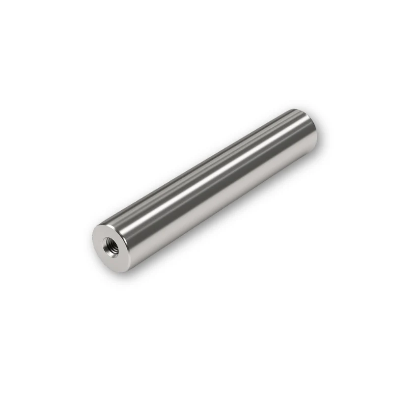
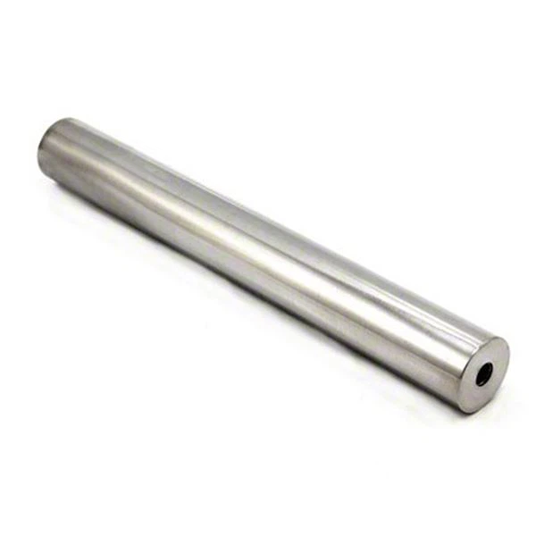
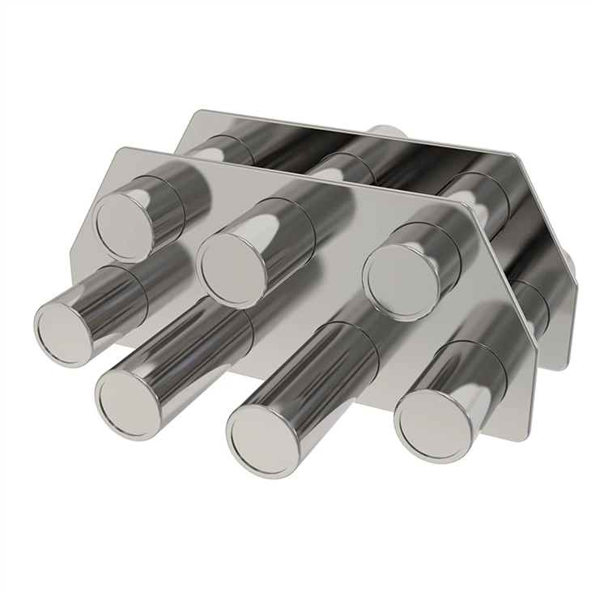
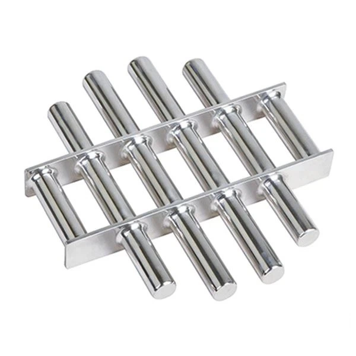
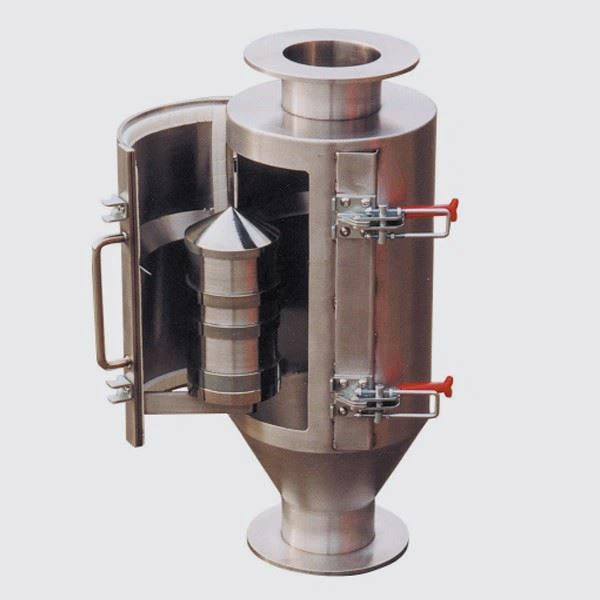
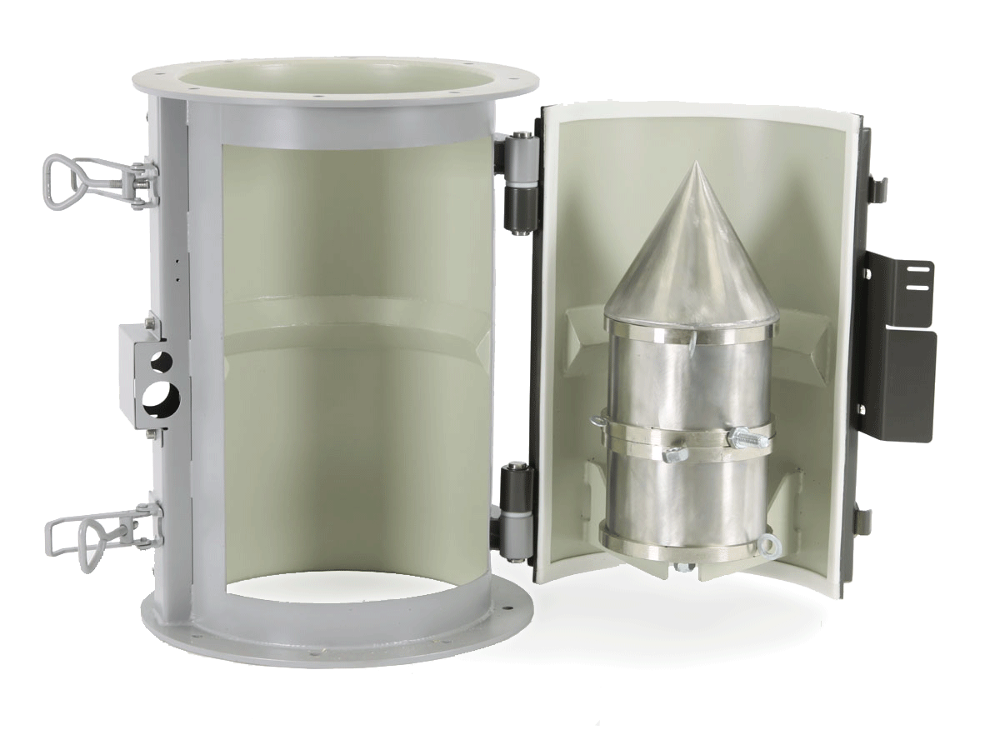

Kembali
Katalog Produk Magnet Neodymium
Tampilan detail produk dari berbagai sudut. Klik pada produk untuk melihat detail[cite: 5].

Neodymium Tube Magnet 25mm
Penyaring material bubuk / cairan

Easy Cleaning Magnetic Bar
Sistem pembersihan praktis

Mirror Finish 12000 Gauss Tube
High-gauss magnetic separation

Grate Magnet with Diverter
Optimalisasi aliran material curah

Standard Grate Magnet
Perlindungan mesin dari partikel besi

Hopper Magnetic Filter
Standar keamanan industri pangan

Permanent Bullet Magnet
Penyaring jalur pipa pneumatik

Bullet Magnet (Without Reducers)
High-speed pipeline separator

Industrial Magnetic System Unit
Solusi instalasi pabrik skala besar